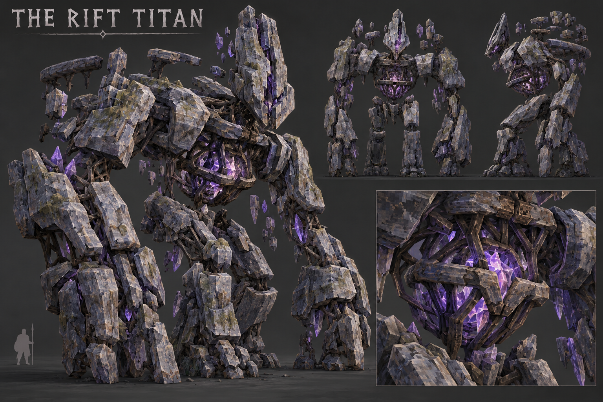

active-anatomy-review. committed concept and saved study front/side/clay inspected; continued anatomy work required. User art acceptance: false.

Same normalized neutral lighting, owned surface maps and actual runtime topology. This is an offline material approximation; it does not establish Valheim appearance or animation acceptance.
Verified stored forward: +Z. Exporter: tools/export-refined-boss-runtime.py: [-x,z,y]. The camera basis inverts this exporter before assigning front/rear labels.
1,800 triangles / 1 renderers / 1 materials. Native donor: StoneGolem; measured triangles: 1200.
Latest separate study comparison. A study is separate from the current installed model.